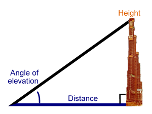

Week 5 Tasks
Decision Making
Task 1
WAP to find the roots of the quadratic equation with real roots using math library.
Hint:
$$ ax^2+bx+c=0 $$
$$ x = \frac{-b \pm \sqrt{b^2 - 4ac}}{2a} $$
Task 2
WAP to read weekday number and print weekday name using switch.
Note: Week starts from monday -> 0, tuesday -> 1, etc.
Task 3 (Experiment 9)
WAP to design calculator with basic operations using switch.
Lab: Minimum Required : +,-,/,*,%
Homework: Additional Operation : $x^y$,$ \sqrt{x} $
Task 4
Modify the previous program to run repeatedly along with a exit condition using goto.
Task 5 (Bonus Task)
WAP to find the height of the building when the user enters the distance from the building and the angle of elevation in degrees.
